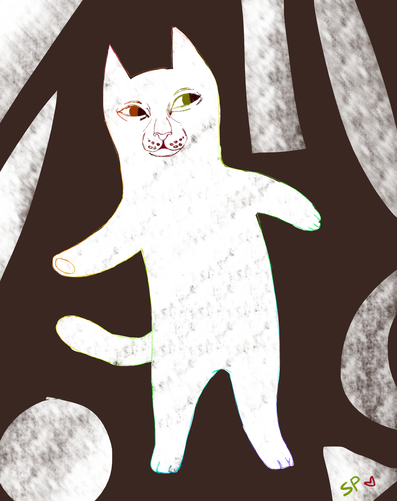

Котаны обитают в домах и на улице, они заполоняют множество щелей и емкостей! Так почему же они так популярны?
Ко́шка, или дома́шняя ко́шка (лат. Félis silvéstris cátus), — домашнее животное, одно из наиболее популярных[1] (наряду с собакой) «животных-компаньонов». С зоологической точки зрения домашняя кошка — млекопитающее семейства кошачьих отряда хищных. Ранее домашнюю кошку нередко рассматривали как отдельный биологический вид. С точки зрения современной биологической систематики домашняя кошка (Felis silvestris catus) является подвидом лесной кошки (Felis silvestris). Являясь одиночным охотником на грызунов и других мелких животных, кошка — социальное животное, использующее для общения широкий диапазон звуковых сигналов, а также феромоны и движения тела.
Каждый из нас, услышав этот характерный бархатистый звук, не раз задавался вопросом – почему урчат кошки. Это неотъемлемое свойство всех представителей семейства кошачьих (но у некоторых мурчание скорее напоминает рык), домашний питомец может таким образом благодарить хозяина за еду, за ласку, выражать свою любовь и привязанность. Мамы-кошки мурчат при кормлении или вылизывании своих котят. Котенок мурчит, в свою очередь, в то время как любящая мама или, уже в более взрослом возрасте, когда хозяин заботится о нем. Но урчание не всегда может означать приятные эмоции. Бывает такое, что кошки начинают урчать при сильном стрессе, при восстановлении после серьезных травм, поэтому важно понять, как мурчат кошки, чтобы определить причину.